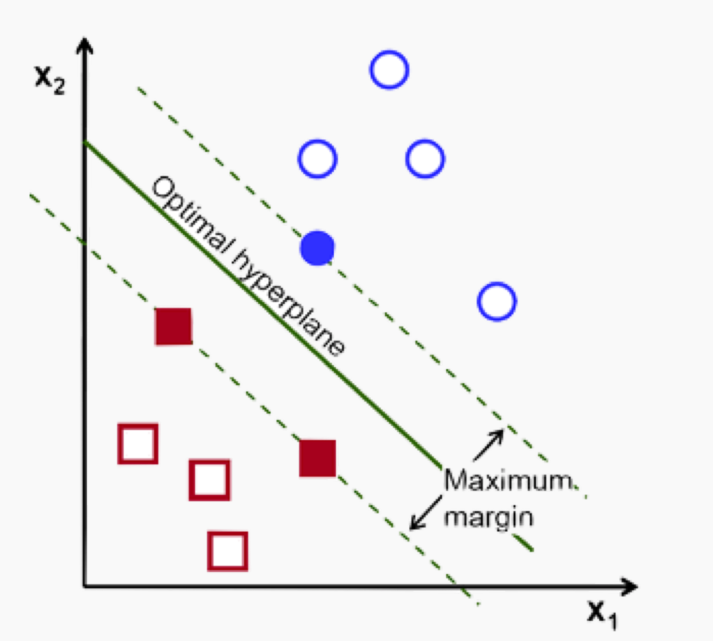
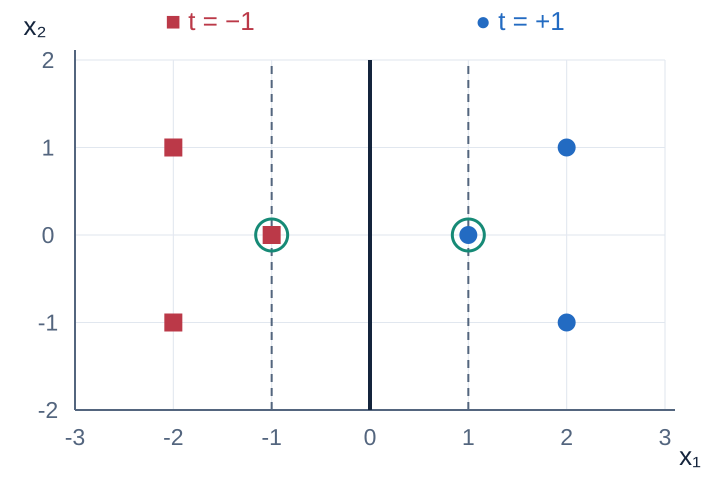
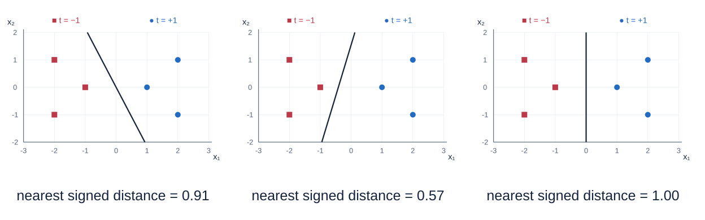
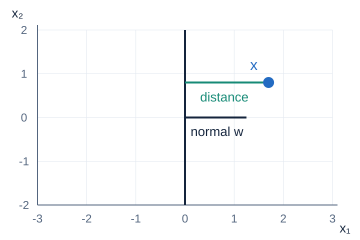
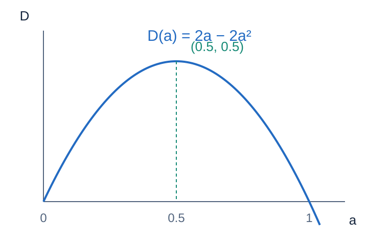
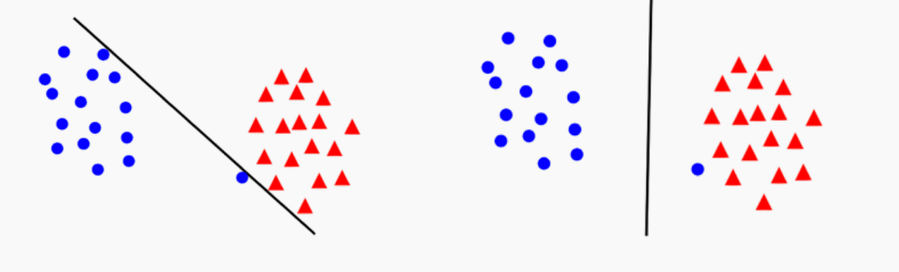
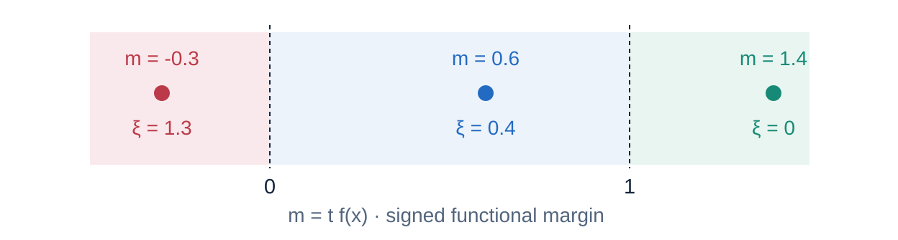
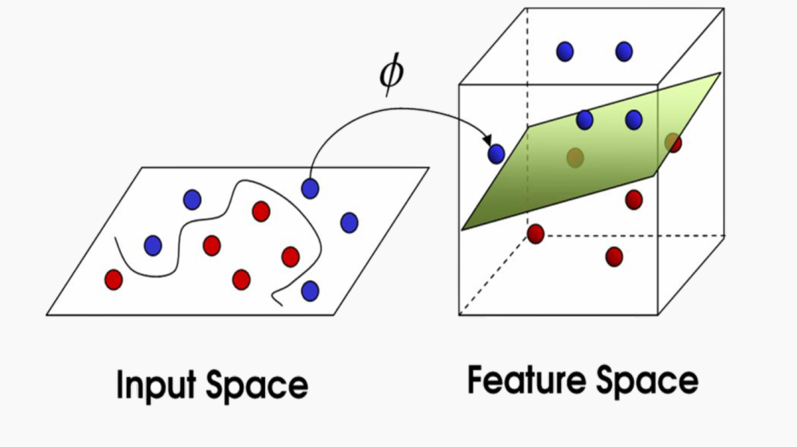
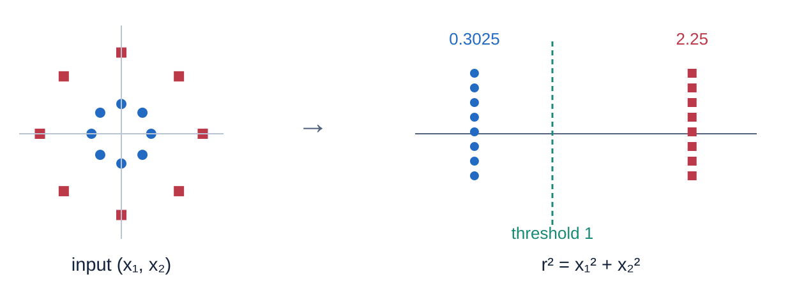
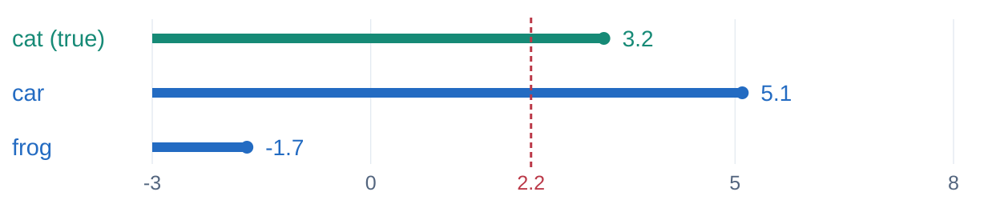

Support Vector Machines
From geometry to a learning objective
- Choose a boundary geometricallyDistance, scale, maximum margin, and support vectors.
- Optimize with the dualMultipliers, constraints, and a small worked solution.
- Handle violations and nonlinear patternsSlack variables, regularization, and the kernel trick.
- Extend to multiclass learningScores, hinge loss, and gradient-based optimization.
Start with two classes

Training data:
Predict the sign of
A zero score is a tie. Scores are not probabilities.
Correct classification leaves many choices

Choose the separator with the largest distance to its nearest training example.
The weight vector is normal to the boundary

On the boundary,
Moving perpendicular to
Normalize the score to get a distance
For labeled example
Positive means correct; larger means farther from the boundary on the correct side.
The dataset margin is
The score scale is arbitrary
They define the same boundary and predictions.
Functional margin
Multiplies by
Geometric margin
Stays unchanged.
An unnormalized score alone cannot identify the widest margin.
Fix the closest functional margin to one
For separable data, rescale a separator so that
Each margin plane is
Full margin width:
Compute the width of the running example
Margin planes:
Using
Nearest constraints determine the separator
The closest examples touch the margin planes.
At the optimum, some training constraints are active.
The dual assigns nonzero coefficients only to support vectors.
A touching point can have zero coefficient in a degenerate solution.
Rotate the boundary and measure its margin
The normal vector has unit length.
Which angle and intercept maximize the minimum signed distance?
Maximum margin becomes a convex problem
Minimizing the squared norm maximizes the canonical geometric margin.
A convex quadratic objective with affine constraints: every local optimum is global.
Hard margin requires linearly separable data.
The dual problem
Replace a weight vector with one coefficient per training example.
Put the constraints into a Lagrangian
Write each constraint as
Each multiplier prices the corresponding training constraint.
Eliminate the primal variables
The equality constraint comes from the unregularized bias.
Substitute the weighted sum back in
Eliminate
Maximize a concave quadratic in α
The data enter through inner products, not individual coordinates.
For separable data, strong duality gives the same optimum as the hard-margin primal.
Complementary slackness identifies support
Outside the margin
No contribution to the weight sum.
Nonzero coefficient
The constraint is active.
Recover the classifier from support vectors
For a hard-margin support vector
Train coefficients; predict using a weighted sum of similarities.
For a linear SVM, form and store
Solve the dual for two support points

The equality gives
Primal = dual =
Optimize two coefficients at a time
Changing one coefficient usually breaks the equality.
Move a pair along a feasible direction:
Our tiny demos use exhaustive pair-coordinate ascent, not a production SMO implementation.
Allow controlled margin violations
Hard constraints can be brittle—or impossible—when examples overlap.
One unusual point can reshape the boundary

Insisting on zero training error may force a very narrow margin.
Permit some violations, and charge for them explicitly.
Slack measures a shortfall from the margin

The smallest feasible slack is
A violation is not always a classification error
| Signed score | Minimum slack | Interpretation |
|---|---|---|
| On or beyond correct margin | ||
| Correct, inside the margin | ||
| On the decision boundary | ||
| Wrong side |
Trade margin width against total slack
Smaller C
Violations cost less relative to the weight penalty.
Larger C
Violations cost more relative to the weight penalty.
Here
Change C while keeping the data fixed
Same seven points, including an overlapping positive example.
Green circles:
Computed linear SVM, synthetic data; no validation set.
Slack adds an upper bound in the dual
Add multipliers
Read support-vector roles from α
| Coefficient at optimum | Signed score | Role |
|---|---|---|
| No contribution to prediction | ||
| Free margin support vector | ||
| On or inside margin |
Recover
With no free support vector, use the KKT bounds on b.
Nonlinear boundaries through kernels
The dual needs similarities between examples.
Can we compute them in a richer feature space?
Separation can appear after a feature mapping

Choose a feature map
A hyperplane in feature space can be curved in input coordinates.
A nonlinear feature separates the rings

Evaluate inner products without the features
The dual objective and prediction only need these values.
Compute a feature-space inner product without constructing each feature vector.
The feature map is implicit; an optimization problem still has to be solved.
Expand a kernel once to see why it works
For
The dual now gives a nonlinear classifier
The optimizer still learns coefficients on training examples.
RBF bandwidth changes the shape of influence
Small
Large
A valid kernel behaves like an inner product
For every finite input set, the Gram matrix
| Linear | |
|---|---|
| Polynomial | |
| RBF |
Fit scaling on training data; select kernel settings and C on validation data.
Choose the optimization view for the problem
| Explicit linear features | Implicit nonlinear kernel | |
|---|---|---|
| Parameters | Store | Support vectors, coefficients, bias |
| Typical route | Primal or linear dual solvers | Kernel dual / SMO-like methods |
| Prediction | One dot product | One kernel per support vector |
A full dense Gram matrix has
Kernels enrich fixed features. An MLP learns its representation jointly with the classifier.
From two classes to many
Keep the margin idea.
Decide how to compare more than two class scores.
Combine binary classifiers—or train jointly
One versus rest
Train
Choose the largest class-versus-rest score.
One versus one
Train
Use pairwise votes with a tie rule.
These reductions differ from optimizing a joint multiclass loss.
Three classes give 3 one-vs-rest models or 3 pairwise models.
A matrix produces one score per class
True label

The true class must beat every competitor
Add one hinge penalty for each violated class-score margin.
Exclude the true class. This is CS231n’s sum-of-hinges formulation.
Calculate the loss before changing the model
| Class | Cat image | Car image | Frog image |
|---|---|---|---|
| cat | 3.2 | 1.3 | 2.2 |
| car | 5.1 | 4.9 | 2.5 |
| frog | −1.7 | 2.0 | −3.1 |
Car:
Mean data loss:
Correct predictions can still violate a margin
Frog score fixed at −1.7.
Cat 3.2 and car 3.0: prediction is correct. Is the loss zero?
Eliminating slack exposes the binary hinge
The constrained soft-margin problem and regularized hinge-loss problem have the same minimizers.
Match the sum and mean conventions
Divide by the positive constant
For this fixed dataset and these conventions, larger C means smaller λ.
Check normalization: other objectives may average differently or omit the half.
A joint loss gives a direct learning problem
The joint objective is convex for linear scores.
Optimize the weights directly without deriving another kernel dual.
A violated margin tells scores how to move
Let
Other competing scores have derivative zero.
Default cat example: only car violates.
A descent step raises the true score and lowers the violating score.
At a hinge kink, choose a valid subgradient; zero is a common convention.
Convert score gradients into weight gradients
For one example, set
Learning rate
Work one binary subgradient update
Use
New signed score:
Hinge data loss:
A sampled update need not reduce the full dataset loss.
A minibatch subgradient method scales training
# Batch rows; use the current weights to form all gradients.
for Xb, yb in shuffled_minibatches(X, y):
scores = Xb @ W.T + b
d = multiclass_hinge_score_grad(scores, yb)
W -= eta * (d.T @ Xb / len(Xb) + lam * W)
b -= eta * d.mean(axis=0)Repeat: sample → score → measure violations → update.
Code labels 0…K−1. The helper returns score gradients for each example’s summed hinge loss.
Keep the objective; change the score function
Input
x
→Score function
s=f_\theta(x)
→Loss + regularizer
L(\theta)
Linear scores
Learned features
Compute a loss, differentiate, and update parameters.
Connect geometry and the learning view
- Margin: normalize scores to compare distances.
- Dual: optimize coefficients on examples; KKT reveals support.
- Soft margin: trade violations against weight size.
- Kernel: compute feature-space inner products implicitly.
- Multiclass: compare scores, sum hinge losses, optimize weights.
Check the connections
- Canonical
\lVert w\rVert=2 : what is the full margin width? - Signed score
tf(x)=0.6 : what is the minimum slack? Is the prediction correct? - True score2, rivals1.5 and−1: what is the summed multiclass hinge loss?
- Why does the dual enable the kernel trick?
1.
4. It needs only pairwise inner products.
Reading and source lectures
- Harvard CS109A · Lecture 20
Geometry, hard/soft margins, feature-space intuition.
- Stanford CS229 · §§6.3–6.8 and Chapter 5
Margins, duality, SMO, and valid kernels.
- CS231n · Linear Classification · Optimization I
Worked multiclass losses and the learning perspective.
- Platt · SMO · Chang & Lin · LIBSVM
Supplementary: practical optimization and multiclass reductions.